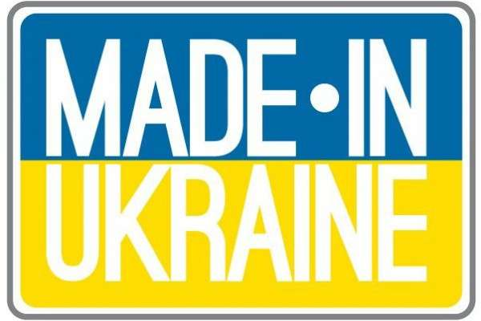
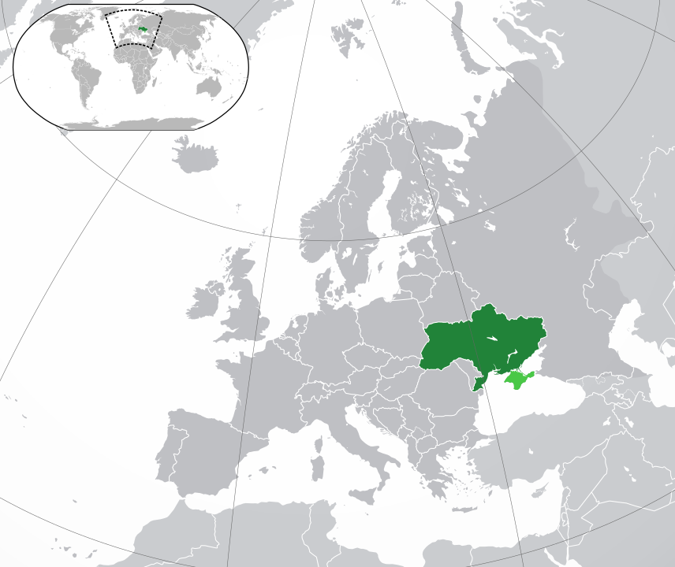
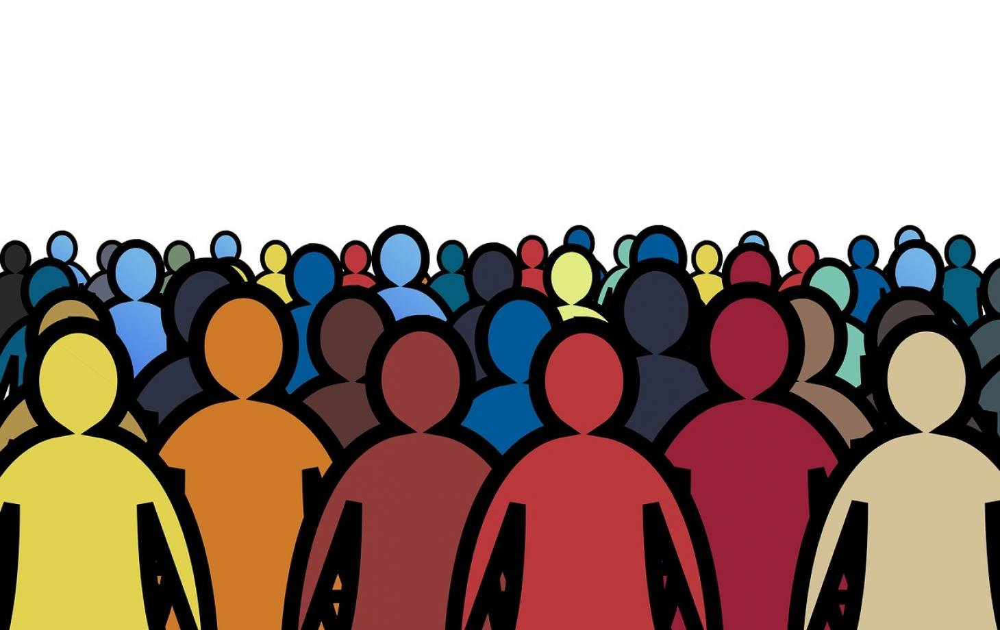
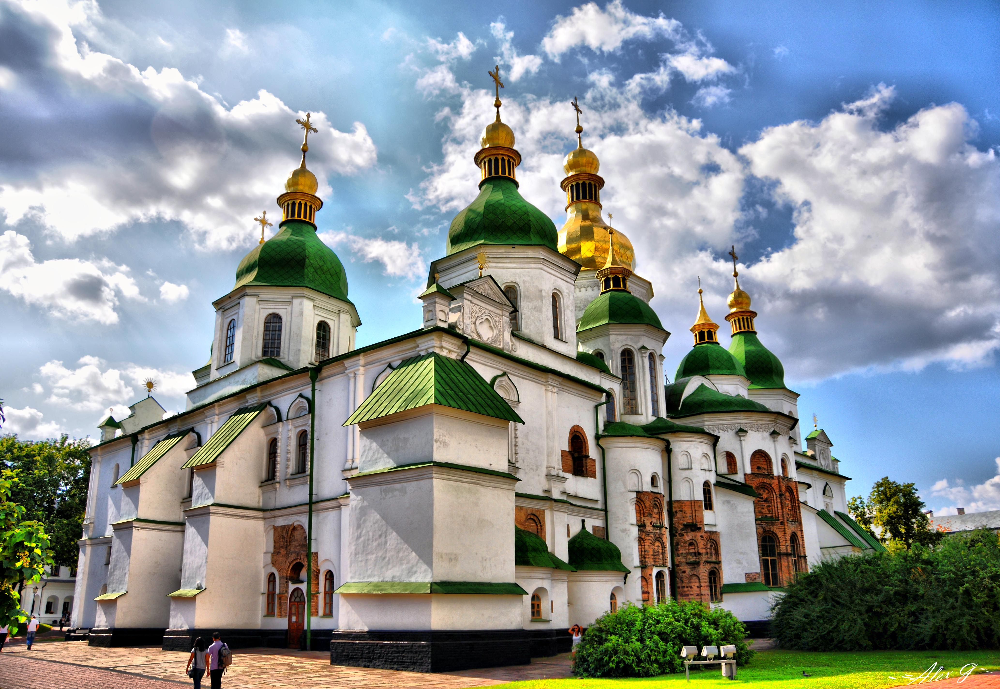
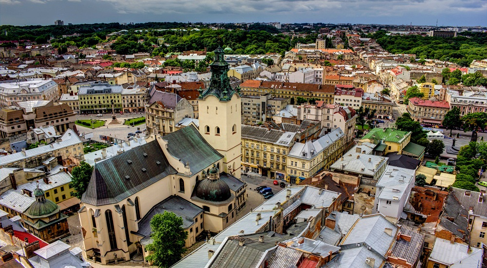
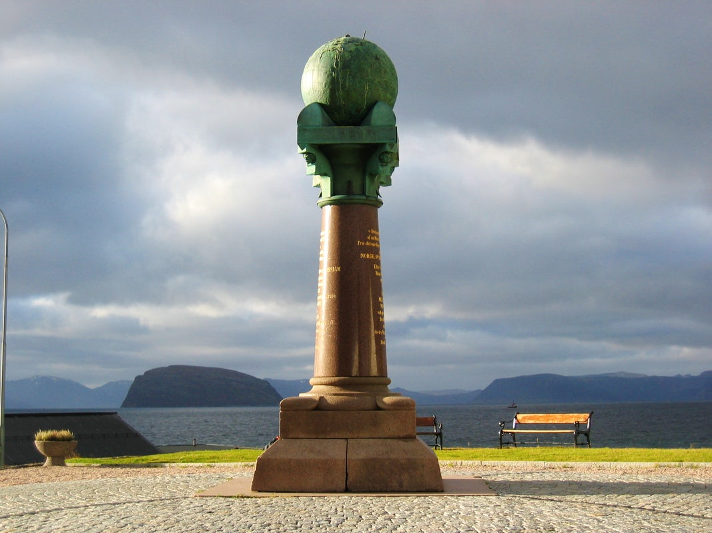
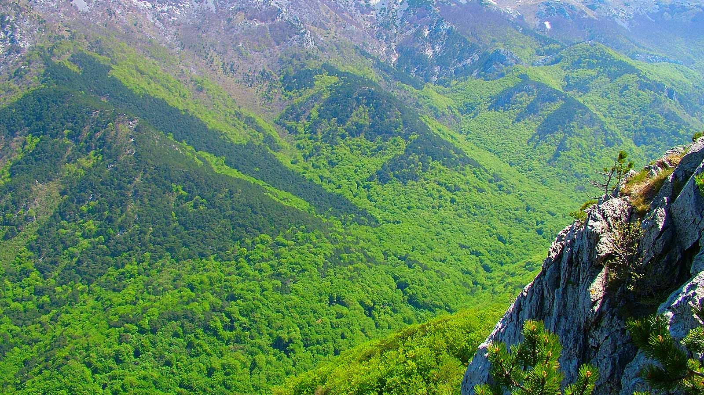
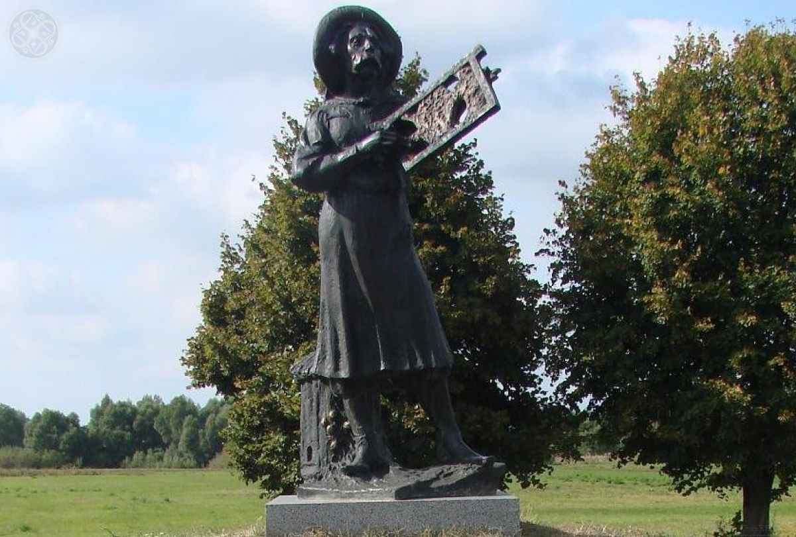

Цікаві факти про Україну
Зроблено в Україні

Україна — це великий виробник зерна (вона входить до трійки найбільших виробників ячменю). Поруч із Францією, Німеччиною та США — один з найбільших виробників цукрового буряка, випереджуючи таких сусідів як Польща та Туреччина. Входить Україна до сімки найбільших у світі виробників цукру, рослинної олії, свинини та картоплі. Входить до п’ятірки найбільших світових виробників меду.
На початок
Велика держава

Україна — це найбільша з країн, що повністю знаходяться в Європі.
На початок
Нас багато

За кількістю населення Україна посідає 5 місце в Європі (після Німеччини, Італії, Великобританії, Франції) та приблизно 21 місце у світі. На її долю припадає 7,3% населення Європи i 1% населення Землі
На початок
Нам є чим пишатися
П’ять українських об’єктів внесені до переліку Світової спадщини ЮНЕСКО, які є видатними культурними і природними цінностями, що становлять надбання усього людства, це такі:
- Kiev – Saint-Sophia Cathedra

- Kiev – Related Monastic Buildings, Kiev-Pechersk Lavra

- L'viv – the Ensemble of the Historic Centre

- Struve Geodetic Arc

- Primeval Beech Forests of the Carpathians

На початок
Відкритя

Перший рамковий вулик було винайдено 1814 року П. І. Прокоповичем.
На початок